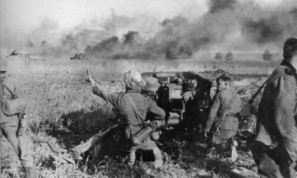
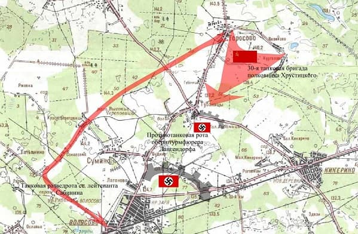
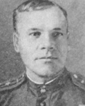
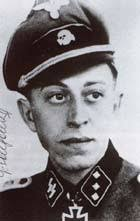
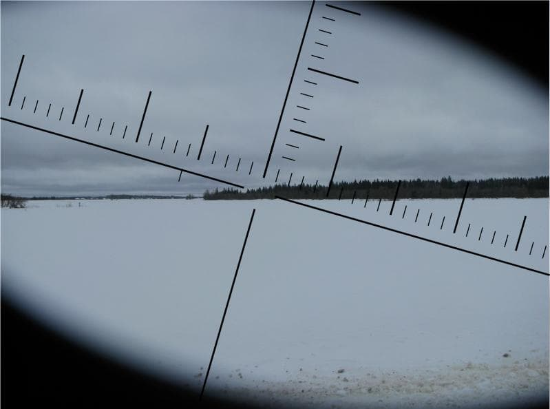

Оперативная сводка за 27 января 1944 года
В течение 27 января западнее, юго-западнее и южнее ГАТЧИНА наши войска, продолжая развивать наступление, заняли город и железнодорожный узел ВОЛОСОВО, а также более 40 других населённых пунктов, в том числе крупные населённые пункты ЗАКОРНОВО, ЛОПУХИНКА, НОВАЯ БУРЯ, НОВЫЕ МЕДУШИ. МУХОВИЦЫ, СТАРАЯ БУРЯ, СЛЕПИНО, ЩЁЛКОВО, БОЛЬШОЕ и МАЛОЕ ТЕШКОВО, СТАРОЕ ГРЕБЛОВО, КЛОПИЦЫ, РОНКОВИЦЫ, ЧЕРЕПОВИЦЫ, СУМИНО, БОЛЬШИЕ и МАЛЫЕ ГУБАНИЦЫ, РОГОВИЦЫ, БОЛЬШОЕ и МАЛОЕ КИКЕРИНО, ЕЛИЗАВЕТИНО, НИКОЛАЕВКА, ШПАНЬКОВО, БОЛЬШОЕ ТЯГЛИНО, ВЫСОКО-КЛЮЧЕВОЕ, ВОСКРЕСЕНСКОЕ и железнодорожные станции ЕЛИЗАВЕТИНО, КИКЕРИНО, СУЙДА.
27 января 1944 года при наступлении на Волосово произошёл один из самых тяжких эпизодов освобождения района. В бою в деревне Губаницы была разгромлена 30-я гвардейская танковая бригада. Погиб её командир полковник Владислав Хрустицкий. Обстоятельства этого боя до сих пор вызывают вопросы.
Подробную и реальную картину освобождения Волосово представить трудно. Воспоминания современников советской эпохи фрагментарны, противоречивы, очевидны фантазиями и сервильностью. К воспоминаниям с немецкой стороны тоже есть вопросы. Далее попытка реконструкции происшедшего.
Наступление на Волосово вела 2-я ударная армия. Та самая, что полностью легла под Мясным Бором в 1942 году под командованием генерала А.А.Власова. Знамя армии было вывезено из окружения самолетом и она была сформирована, практически заново. 24 января в результате боев за Елизаветино 2-я ударная армия перерезает железную дорогу Гатчина-Кингисепп.С этого момента немцы начинают поспешное отступление к линии "Пантера" - дуга "Нарва-Псков", оставляя арьергарды. Задача арьергарда — задержать наступающего противника, выиграть время, необходимое для отрыва главных сил, обеспечить их организованный отход и занятие назначенного рубежа.
Советские войска, взломав известные укрепрайоны, наступают стремительно, не встречая серьезного сопротивления. В Волосово их пытается задержать один из арьергардных отрядов 11-ой добровольческой танково-гренадерской дивизии СС "Нордланд". Для этого он спешно подготавливает оборонительные позиции на перекрестках дорог в Волосово и в Губаницах - узлах, которых русским танкам не миновать.26 января 30-я танковая бригада полковника Хрустицкого занимает д. Торосово . Предполагая боестолкновение на перекрестке дорог в Губаницах (последний населенный пункт перед Волосово), командир бригады ставит задачу разведроте обойти этот участок и выйти к Волосово с запада. Сам во главе основных сил возглавляет атаку на позиции немцев.

В результате боестолкновения в Губаницах остаются несожженными 16 из 43 (по советским мемуарам), или 12 из 60 (по немецким) советских танков, которые отступают назад к Торосово. Командир бригады погибает.
Разведрота старшего лейтенанта Сабинина благополучно обходит поле боя и, практически беспрепятственно, занимает переезд станции Волосово.
Немецкий арьергард, выполнив задачу, организованно отступает, судя по дальнейшему развитию событий.
1 февраля в результате тяжелых боев советские войска освобождают Кингисепп.
3 февраля выходят к Нарве. И останавливаются, не в состоянии преодолеть укрепрайон "Пантера".
Через 4 месяца (!) 25 июля начинается Нарвская наступательная операция.
Почему бой превратился в побоище сильных слабыми?
- Как 3 орудия и 8 бронетранспортеров сожгли 40 танков?
- Или полковник Хрустицкий, герой обороны Ленинграда, у которого за плечами война с первых дней и прорыв блокады в операция "Искра", неправильно организовал атаку?
- Или броня некачественная?
- Сопровождала ли пехота танки?
- Почему немцы вышли из боя без потерь?
- Как из короткоствольной пушки БТР можно пробить танковую броню?
Это же не засада, не капкан, когда некуда деться, а поле, где простор для маневра танков. Допустим первым выбыл командир, ну и что?.
Герберт Поллер пишет (см. ссылку), что танки двигались с горки, потому представляли хорошую мишень. Но, там нет горки. Никто не упоминает, чтобы танки подорвались на минах. Наоборот, - одному выстрелу соответствовал один подбитый танк. В чем причина такого результата?
Предположение.
Красная армия наступала стремительно, без отдыха и сна, подгоняемая криками: "уничтожить не позднее...!", "приказ!", "трибунал!". В российской ментальности, особенно в ту эпоху, лобовая атака, лихость, бесстрашие - качества одобряемые; избежание неоправданного кровопролития, ценимость человеческой жизни - трусость. Б
Командир бригады вступил в бой сходу, не имея возможности провести разведку, оценить угрозы, сориентироваться - только вперед!
Особенности национальной атаки.
У немцев, занявших позицию накануне, было время осмотреться, окопаться, замаскироваться, выспаться, наконец. Командир имел возможность объяснить каждому задачу, наметить ориентиры, организовать наблюдение и связь. И воевать его научили, и солдат ценить.
Иначе говоря, вторые к бою были готовы, первые нет.


Полковник Владислав Хрустицкий был похоронен в Парголово.
За этот бой Георг Лангендорф был награжден рыцарским крестом.
Со своей частью в дальнейшем воевал под Нарвой, Ригой, был окружен в Курляндском котле, эвакуировался морем в Померанию, участвовал в тяжелых боях под Данцигом и Штеттином, в боях за Берлин. Был ранен 19 апреля 1945 года. Пережил войну. Умер в 1999 году. Этнический голландец.
Тусклое январское утро. Губаницкое поле, слева Торосово. Танки еще в лесу. Через мгновение тишина лопнет, вырвутся из леса лязгающие стальные чудовища.
Пока все еще живы. А судьбы уже написаны. Там.
Прощаясь с сыновьями, матери крестили и молили за них Бога. Одного и того же. Тем же крестом.
